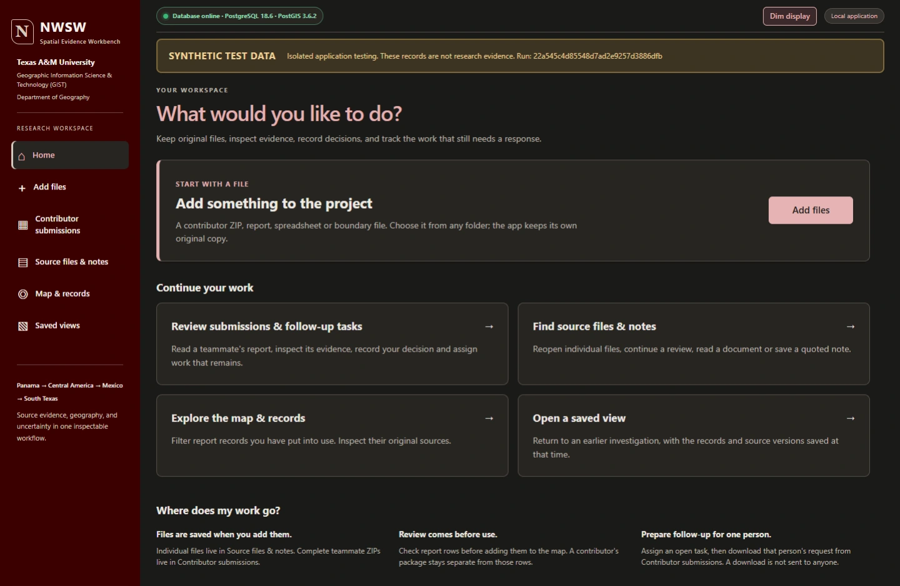
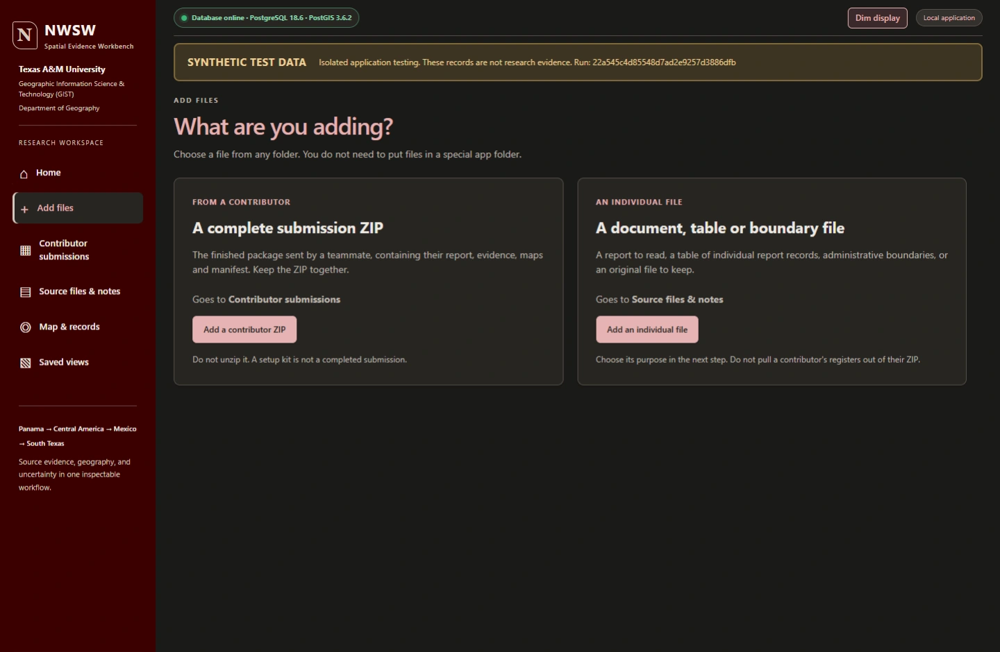

NWSW research & spatial evidence
Original source reconciliation, reusable GIS layers, and cross-team evidence synthesis—with software that preserves the work behind an assessment.
Read the case study ↓



The research problem
Team research needs more than a set of maps. Source versions, reporting definitions, geographic identifiers, and unresolved uncertainty must remain connected as evidence moves from collection to an assessment.
My role
I lead cross-pod evidence synthesis and contribute original GIS and source-verification work. I own the final evidence-matrix integration and took responsibility for the shared boundary work. Original contributors retain credit for their sources, collection, and arguments.
Data & GIS work
My work includes reconciling source versions and reporting definitions, repairing source-backed datasets, preparing reusable administrative boundary layers, and checking geographic joins. Boundary preparation preserves identifiers, historical compatibility, geometry, and packaging context.
Software supporting the research
I develop and maintain the Spatial Evidence Workbench: a Python/FastAPI, PostgreSQL/PostGIS, TypeScript, and Leaflet application. It preserves original files, validates incoming packages, records human review, and retains source versions and filter scope in saved investigations and exports.
Outputs & limits
The project has produced reusable GIS layers, corrected source-backed datasets, and documented research handoffs. The workflow records unresolved gaps and distinguishes software checks from reviewed scientific use.
The broader assessment and final cross-team synthesis remain in progress.
Evidence keeps its context.
01Preserve the sourceOriginal files & identities
Original files retain their source identity. Versioned evidence provides a stable starting point for later review and analysis.
02Check & reviewValidation with human decisions
Contributor packages pass through automated checks and explicit human research review. Acceptance and review remain separate states.
03Investigate spatiallyPostGIS, maps & saved scope
Spatial records support mapped investigations. Saved investigations retain the evidence versions, filters, and methods used.
04Export with contextReproducible research handoffs
Exports preserve provenance, contributor attribution, and review context so an analysis can be inspected and reproduced.
Application workflow illustration. No research records or locations are shown.